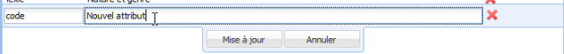
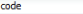
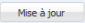
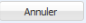
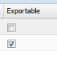

Édition d'un Attribut personnalisé
ÉcranÉditer un attribut personnalisé⚓
RéglementaireAfficher la liste des attributs personnalisés⚓
Sélectionnez l'onglet Attributs personnalisés de la Fiche vocabulaire.
- 1 Attribut personnalisé en cours d'édition
Double-cliquez sur la ligne d'un attribut personnalisé pour l'éditer.
- 2 Code
Saisissez le
Codequi sera utilisé pour identifier cet attribut personnalisé dans les exports. - 3 Type
Saisissez le
Typede l'attribut personnalisé. Il correspond au nom de l'attribut tel qu'il est affiché dans la zone d'édition desConceptsou desTermes. - 4 Supprimer un attribut personnalisé
Cliquez sur le bouton
 pour supprimer l'attribut personnalisé.
pour supprimer l'attribut personnalisé.AttentionAttention⚓
Si vous supprimez un attribut personnalisé et que vous enregistrez vos modifications, alors cet attribut est supprimé de tous les
ConceptsouTermesdu vocabulaire. Soyez donc vigilants avant de réaliser cette opération afin de ne pas perdre d'éventuelles informations qui auraient été saisies. - 5 Mise à jour
Cliquez sur le bouton
Mise à jourpour valider les modifications de l'attribut personnalisé.Cliquez ensuite sur le bouton

Enregistrerde la rubrique correspondante pour sauvegarder vos modifications et les appliquer au vocabulaire.
- 6 Annuler
Cliquez sur le bouton
Annulerpour abandonner les modifications de l'attribut personnalisé.Cliquez ensuite sur le bouton
Enregistrerde la rubrique correspondante pour confirmer l'abandon des modifications.
- 7 Exportable